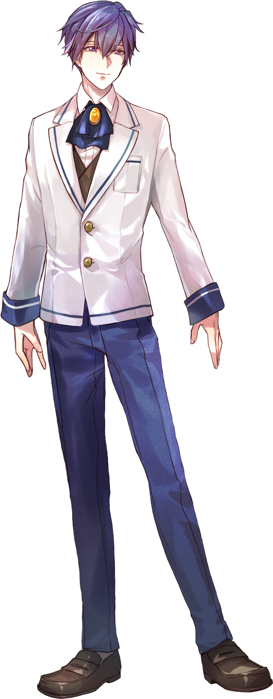
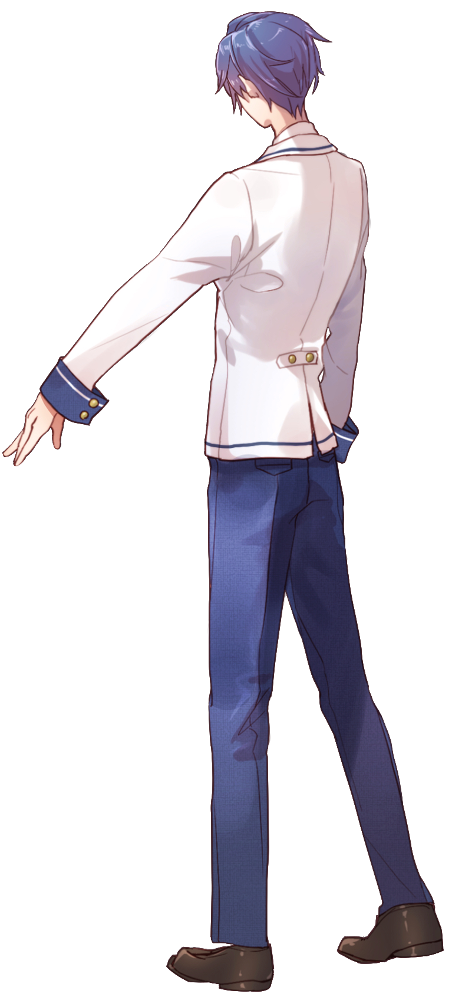

「──ここはどこか寂しいけれど、
夜は星がきれいで俺は好きだな」
| 年齢 | 16歳 |
|---|---|
| 誕生日 | 2月6日 |
| 職業 | 高校2年生 |
| 身長 | 176cm |
| 出身 | 東京都墨田区 |
| 趣味・特技 | 将棋 |
| 家族構成 | 父・母 |
| イメージカラー | 紺瑠璃（こんるり） |
とても穏やかな気質で優しい性格でどこか抜けているところがある。
成績は並みで、秀でるものはとくに無いが
唯一、将棋だけは彼の右に 出るものはいない。
小学2年生の時に東京から横浜に転居してきた。
めぐみとは、小中高と学校が同じで、
小学校で3度同じクラスになった。
その当時の名残で”めぐみちゃん”と呼ぶ。
めぐみとは小学校から高校まで同じ学校へ通い、
小学生の頃には三度同じクラスになった。
この年齢になっても名前で呼ぶことに
ためらいがないことは彼が天然な証である。
今年は5年ぶりに
めぐみと同じクラスになった。